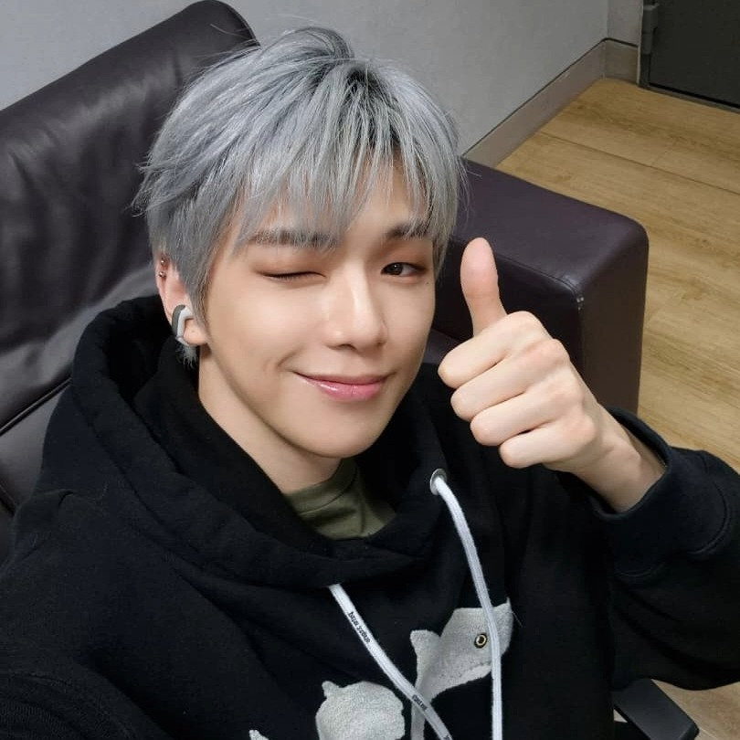
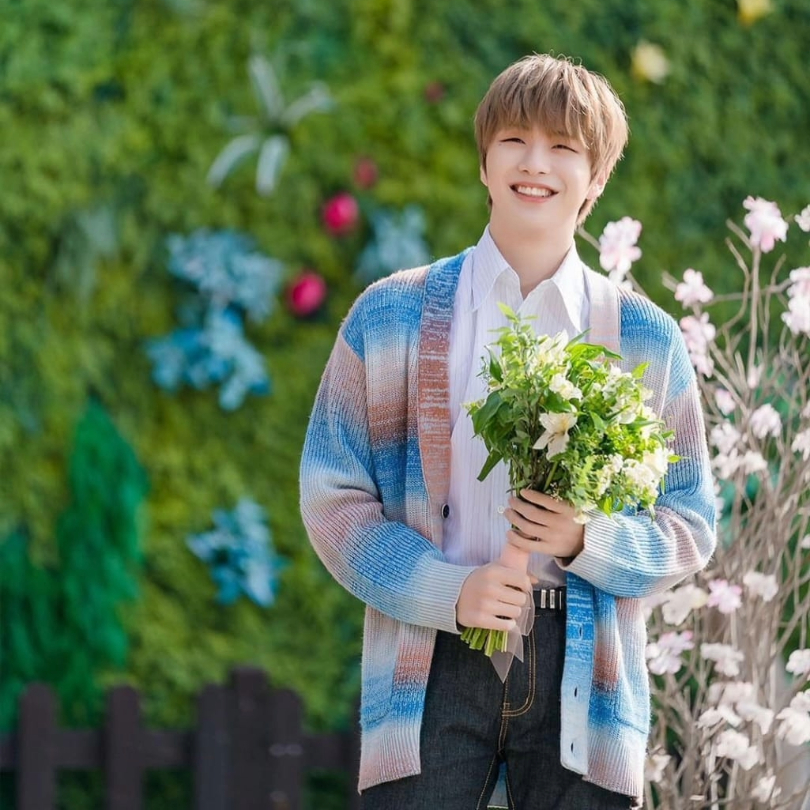
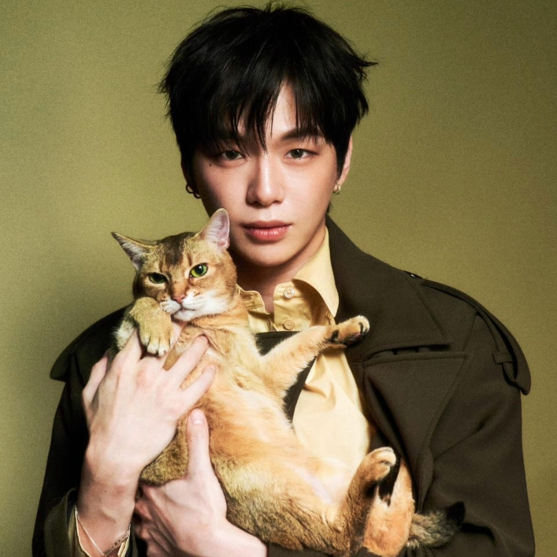
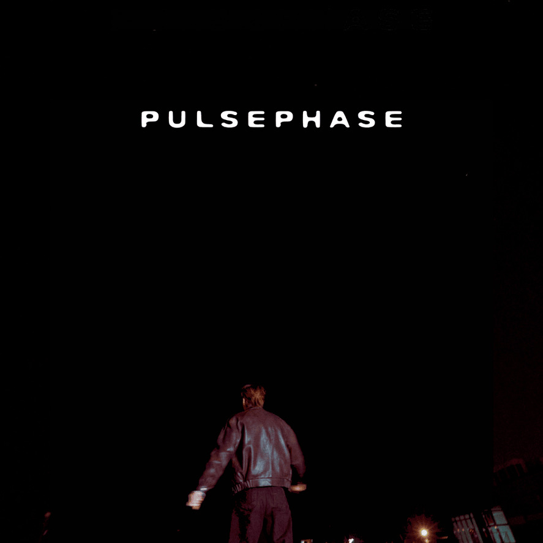
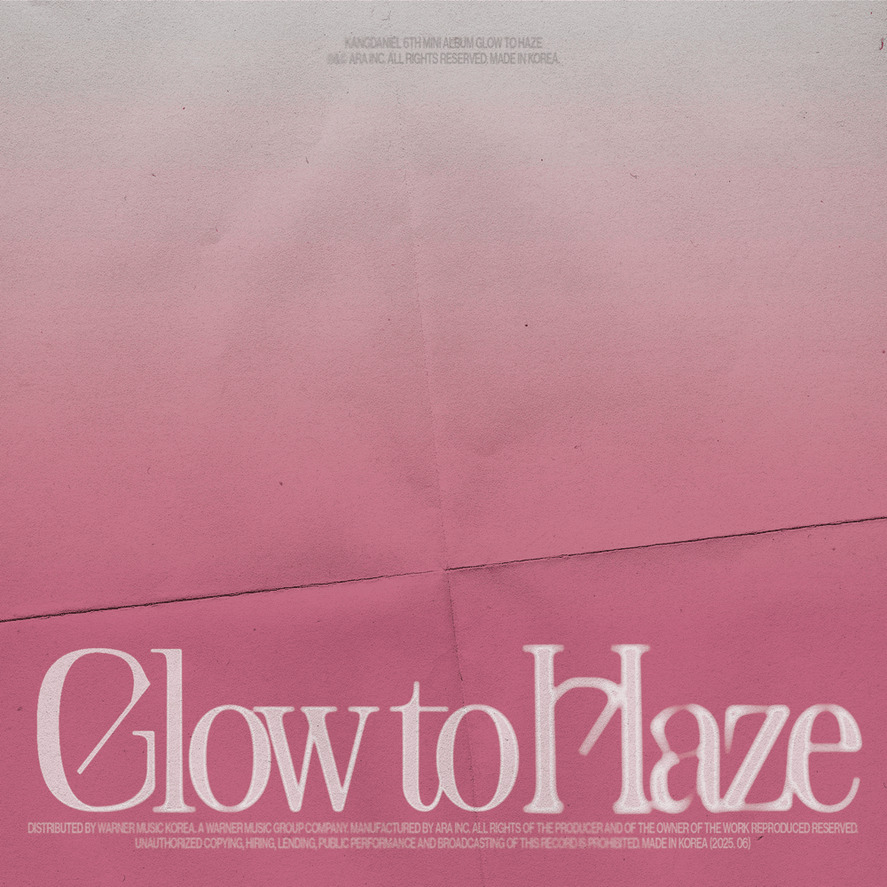
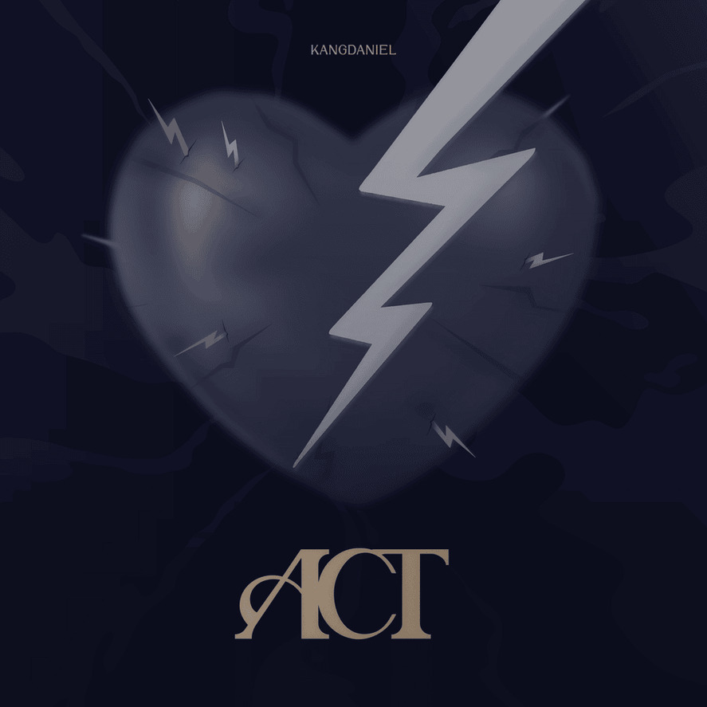

Kang Daniel is a South Korean singer-songwriter, television host, and actor under the record label and entertainment agency ARA. He was born on December 10, 1996, in Busan. He is a former member of the project boy group Wanna One, which was formed through the reality competition series Produce 101. He made his solo debut on July 25, 2019, with his first special album Color on Me. A fun fact about him is that he has four cats named Rooney, Peter, Ori, and Zhang-ah, and he mistakenly thought two of them were male when they are actually female. He is currently enlisted as an active-duty soldier as of February 9 this year.


